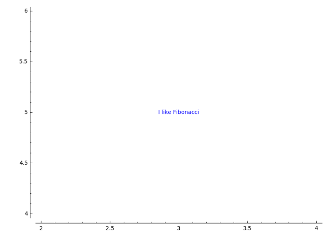
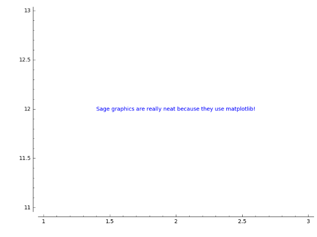
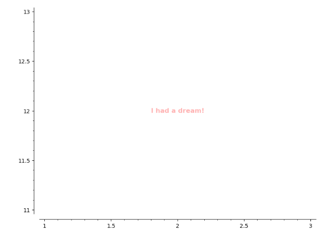
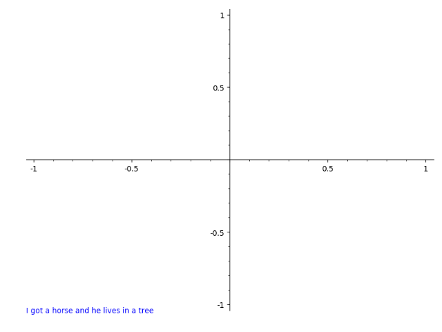
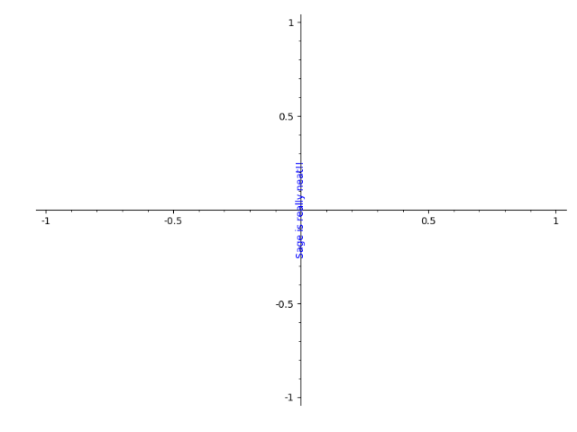
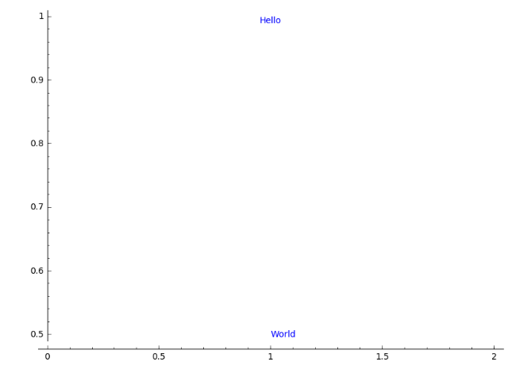
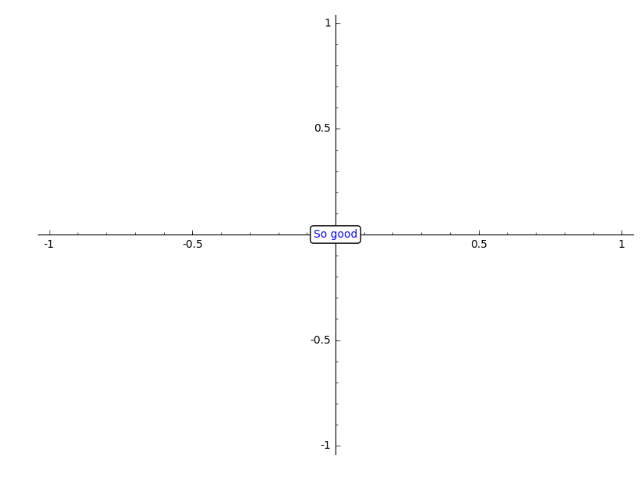
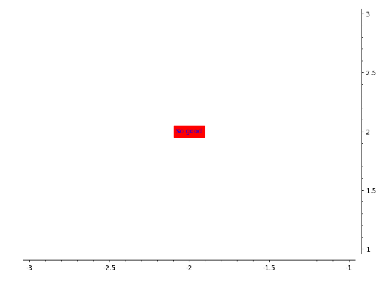

Text in plots¶
-
class
sage.plot.text.Text(string, point, options)¶ Bases:
sage.plot.primitive.GraphicPrimitiveBase class for Text graphics primitive.
-
get_minmax_data()¶ Returns a dictionary with the bounding box data. Notice that, for text, the box is just the location itself.
EXAMPLES:
sage: T = text("Where am I?",(1,1)) sage: t=T[0] sage: t.get_minmax_data()['ymin'] 1.0 sage: t.get_minmax_data()['ymax'] 1.0
-
plot3d(**kwds)¶ Plots 2D text in 3D.
EXAMPLES:
sage: T = text("ABC",(1,1)) sage: t = T[0] sage: s=t.plot3d() sage: s.jmol_repr(s.testing_render_params())[0][2] 'label "ABC"' sage: s._trans (1.0, 1.0, 0)
-
-
sage.plot.text.text(string, xy, clip=False, vertical_alignment='center', rgbcolor=(0, 0, 1), fontsize=10, horizontal_alignment='center', axis_coords=False, **options)¶ Returns a 2D text graphics object at the point \((x,y)\).
Type
text.optionsfor a dictionary of options for 2D text.2D OPTIONS:
fontsize- How big the text is. Either an integer that specifies the size in points or a string which specifies a size (one of ‘xx-small’, ‘x-small’, ‘small’, ‘medium’, ‘large’, ‘x-large’, ‘xx-large’)fontstyle- A string either ‘normal’, ‘italic’ or ‘oblique’fontweight- A numeric value in the range 0-1000 or a string (one of ‘ultralight’, ‘light’, ‘normal’, ‘regular’, ‘book’,’ ‘medium’, ‘roman’, ‘semibold’, ‘demibold’, ‘demi’, ‘bold’, ‘heavy’, ‘extra bold’, ‘black’)rgbcolor- The color as an RGB tuplehue- The color given as a huealpha- A float (0.0 transparent through 1.0 opaque)background_color- The background colorrotation- How to rotate the text: angle in degrees, vertical, horizontalvertical_alignment- How to align vertically: top, center, bottomhorizontal_alignment- How to align horizontally: left, center, rightzorder- The layer level in which to drawclip- (default: False) Whether to clip or notaxis_coords- (default: False) If True, use axis coordinates, so that (0,0) is the lower left and (1,1) upper right, regardless of the x and y range of plotted values.bounding_box- A dictionary specifying a bounding box. Currently the text location.
EXAMPLES:
sage: text("Sage graphics are really neat because they use matplotlib!", (2,12)) Graphics object consisting of 1 graphics primitive
Larger font, bold, colored red and transparent text:
sage: text("I had a dream!", (2,12), alpha=0.3, fontsize='large', fontweight='bold', color='red') Graphics object consisting of 1 graphics primitive
By setting
horizontal_alignmentto ‘left’ the text is guaranteed to be in the lower left no matter what:sage: text("I got a horse and he lives in a tree", (0,0), axis_coords=True, horizontal_alignment='left') Graphics object consisting of 1 graphics primitive
Various rotations:
sage: text("noitator", (0,0), rotation=45.0, horizontal_alignment='left', vertical_alignment='bottom') Graphics object consisting of 1 graphics primitive

sage: text("Sage is really neat!!",(0,0), rotation="vertical") Graphics object consisting of 1 graphics primitive
You can also align text differently:
sage: t1 = text("Hello",(1,1), vertical_alignment="top") sage: t2 = text("World", (1,0.5), horizontal_alignment="left") sage: t1 + t2 # render the sum Graphics object consisting of 2 graphics primitives
You can save text as part of PDF output:
sage: text("sage", (0,0), rgbcolor=(0,0,0)).save(os.path.join(SAGE_TMP, 'a.pdf'))
Some examples of bounding box:
sage: bbox = {'boxstyle':"rarrow,pad=0.3", 'fc':"cyan", 'ec':"b", 'lw':2} sage: text("I feel good", (1,2), bounding_box=bbox) Graphics object consisting of 1 graphics primitive

sage: text("So good", (0,0), bounding_box={'boxstyle':'round', 'fc':'w'}) Graphics object consisting of 1 graphics primitive
The possible options of the bounding box are ‘boxstyle’ (one of ‘larrow’, ‘rarrow’, ‘round’, ‘round4’, ‘roundtooth’, ‘sawtooth’, ‘square’), ‘fc’ or ‘facecolor’, ‘ec’ or ‘edgecolor’, ‘ha’ or ‘horizontalalignment’, ‘va’ or ‘verticalalignment’, ‘lw’ or ‘linewidth’.
A text with a background color:
sage: text("So good", (-2,2), background_color='red') Graphics object consisting of 1 graphics primitive
Text must be 2D (use the text3d command for 3D text):
sage: t = text("hi",(1,2,3)) Traceback (most recent call last): ... ValueError: use text3d instead for text in 3d sage: t = text3d("hi",(1,2,3))
Extra options will get passed on to show(), as long as they are valid:
sage: text("MATH IS AWESOME", (0, 0), fontsize=40, axes=False) Graphics object consisting of 1 graphics primitive sage: text("MATH IS AWESOME", (0, 0), fontsize=40).show(axes=False) # These are equivalent